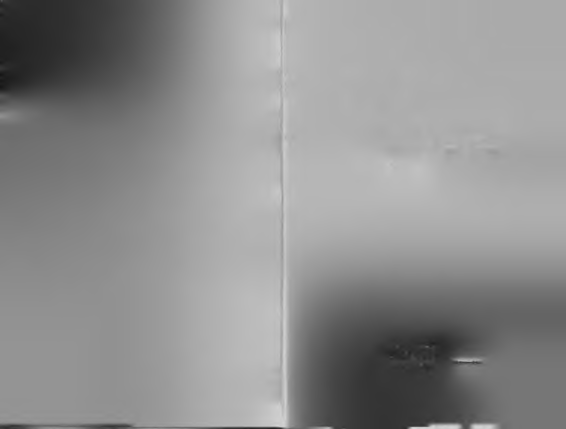
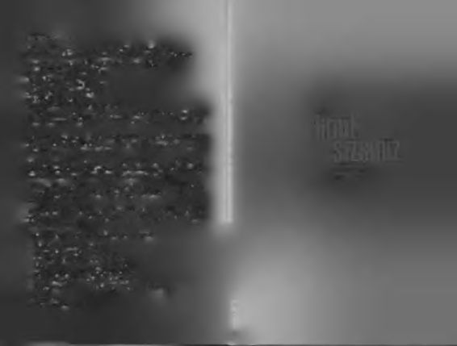

Iımt
szsnz
UÇMA DERSLERİ
“Açılm am ış kanatların
büyüklüğü bilinmez!"
_
A n d re G ide

MÜMİN SEKMAN,
Kişisel gelişim ve sosyal başarı türünde kitapların yazarıdır.
"Başarılı olmak öğrenilebilir" düşüncesini savunan yazarın kitapları:
1. Ya Bir Yol Bul, Ya Bir Yol Aç, Ya Da Yoldan Çekil! (20. baskı)
2. Kesintisiz Öğrenme ( 8. baskı)
3. Türk Usulü Başarı (8. baskı)
4. Başarı Üniversitesi (13. baskı)
5. Kişisel Ataleti Yenmek (15. baskı)
6. Çevik Şirketler (5. baskı)
7. Her Şey Seninle Başlar (500.000 adet)
Bu kitaplardan başka, sıfırdan zirveye başarı öykülerinin anlatıldığı "İnsan
İsterse: Azmin Zaferi Öyküleri" serisinin de konsept danışmanlığını yapıyor.